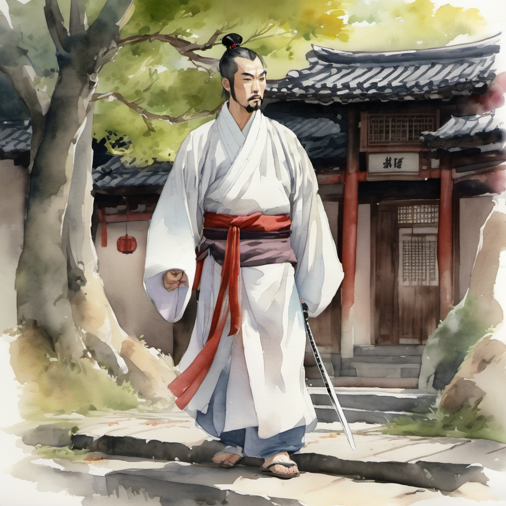
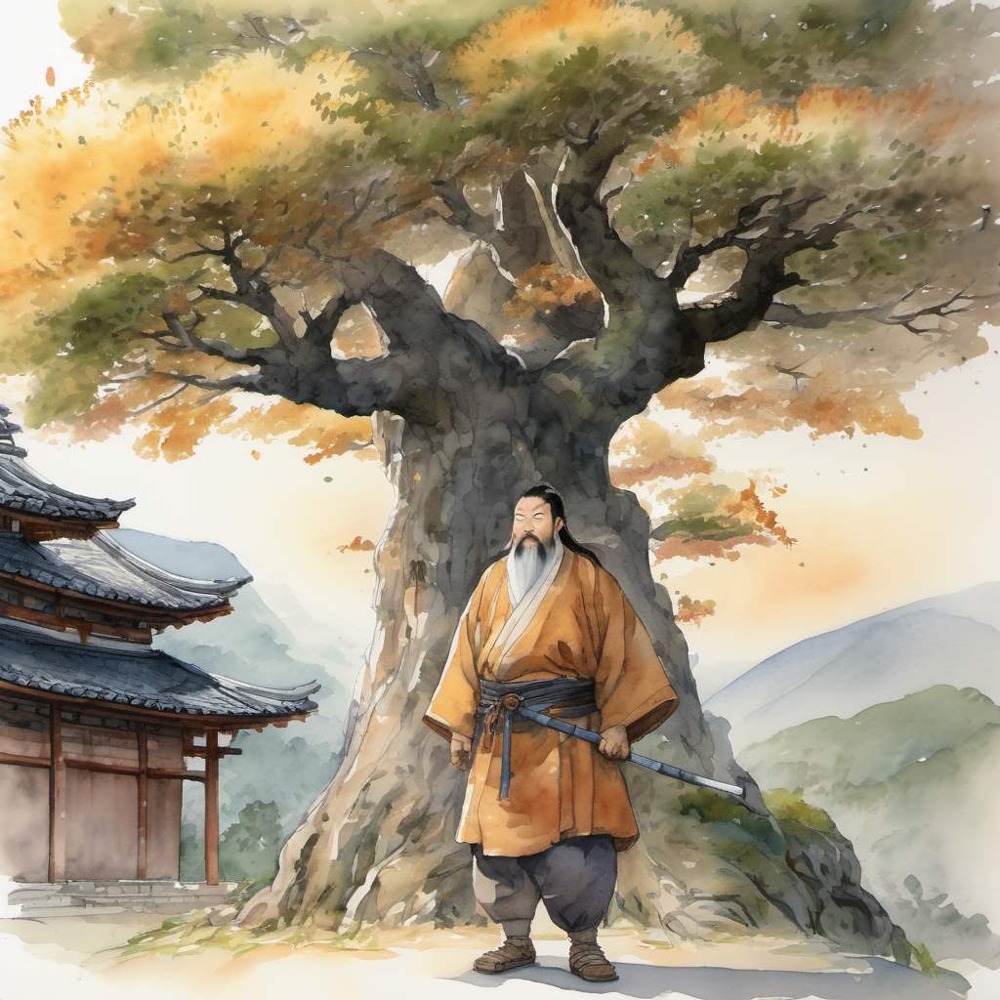
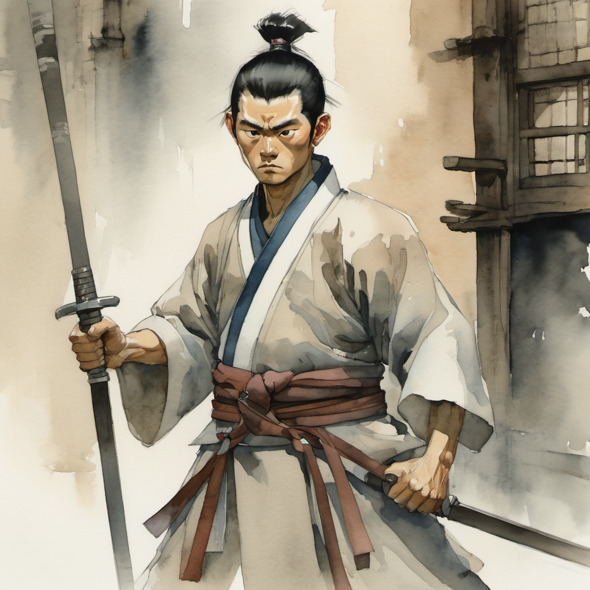
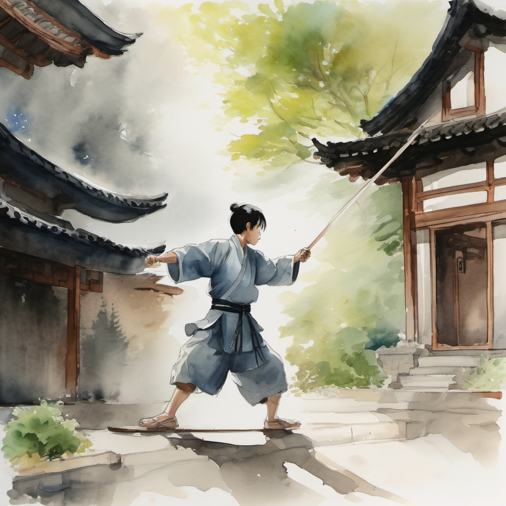
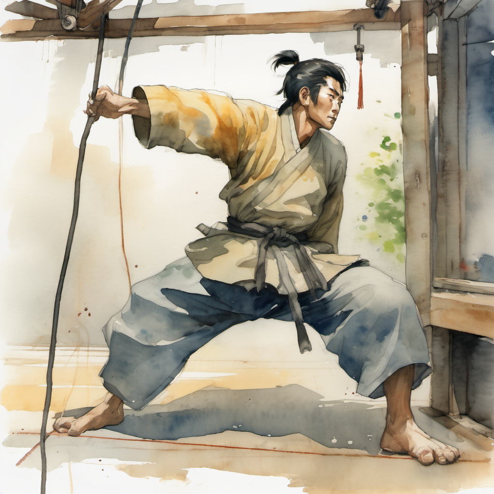
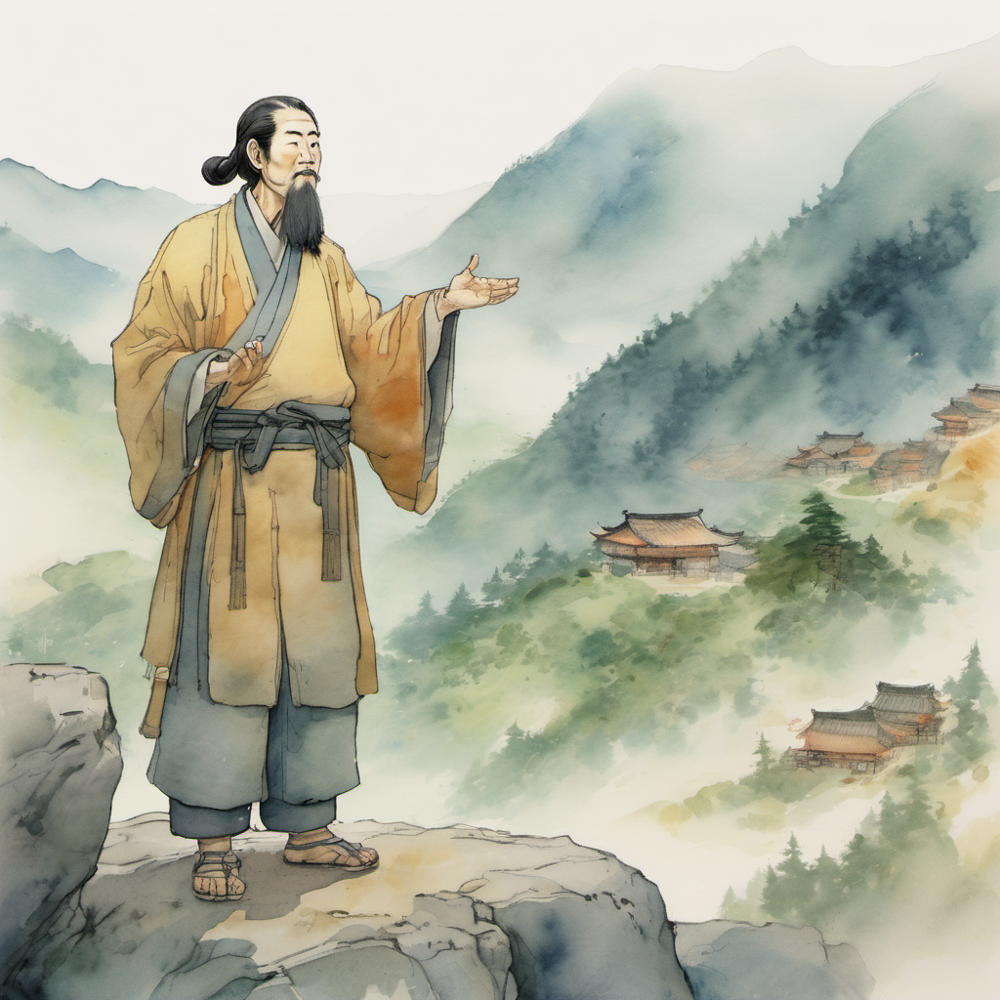
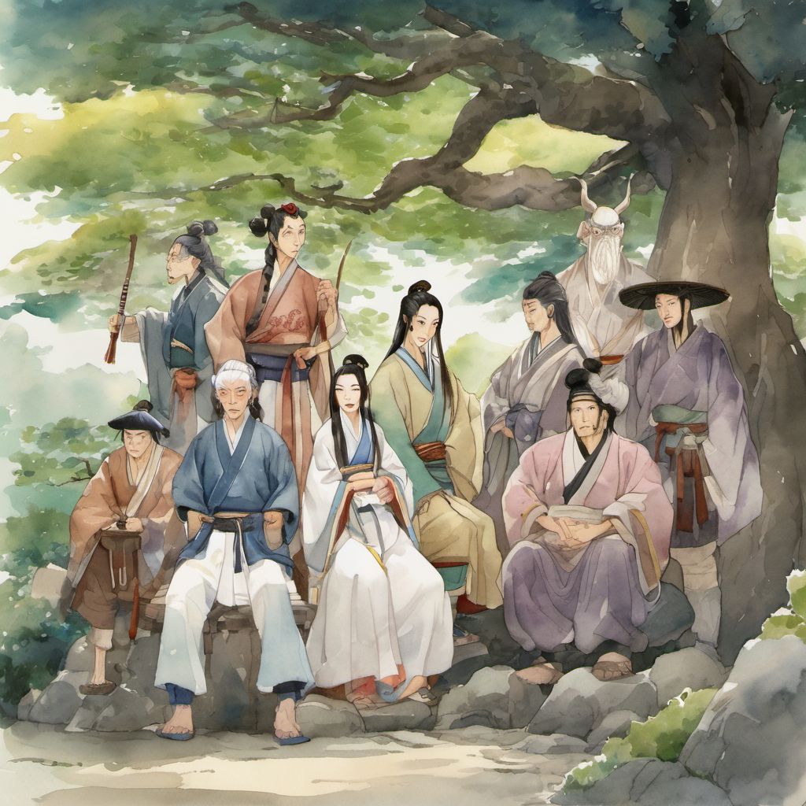
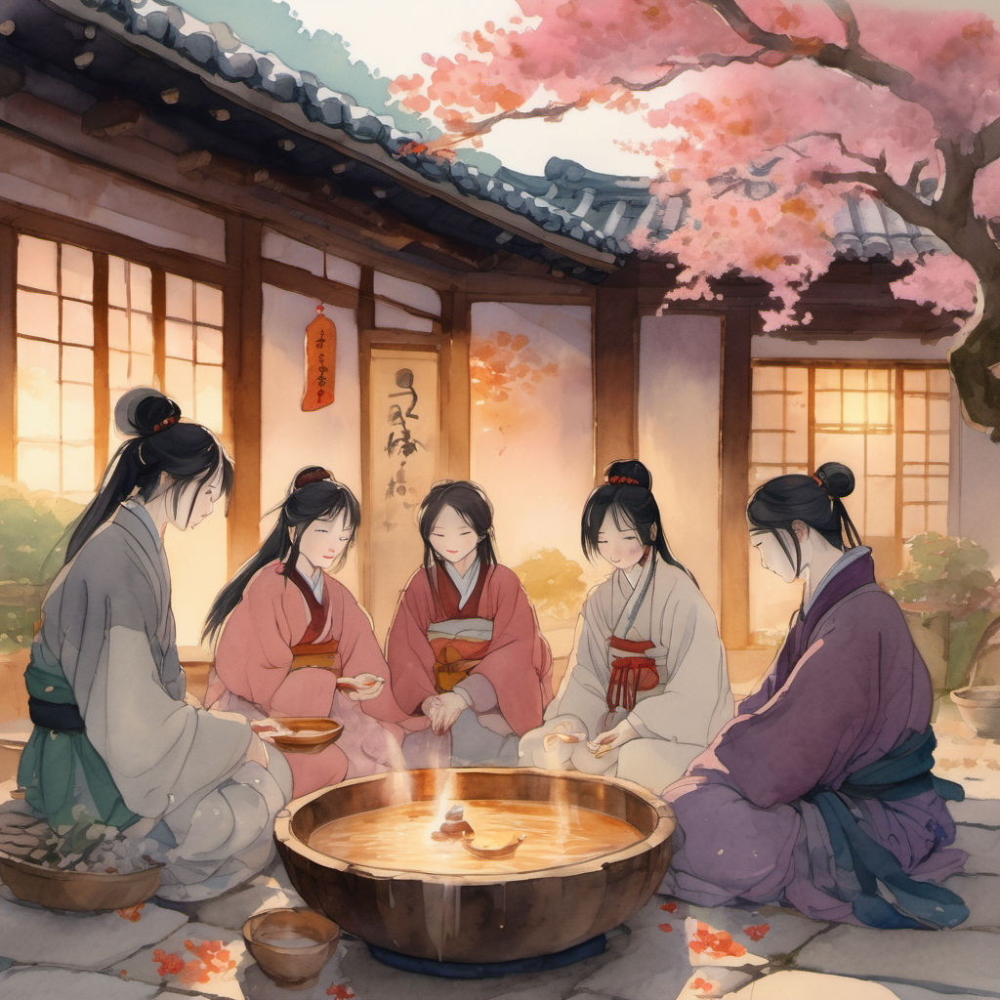

청천 다섯 번째 등장

190cm 거구 — 곽정의 본맥

무휼이 H빔을 — 어깨에 — 걸친 채로 — 마당의 한가운데로 — 한 번 — 걸어 나왔다. 190cm의 거구가 — 마당의 — 매화나무 옆에 — 섰다. 매화나무가 — 무휼의 어깨보다 — 30cm 정도 — 작았다.
김용 풍 사조영웅전의 — 곽정 — 의 — 거구의 — 본맥의 — 정확한 응용.
H빔 5cm 어긋남

무휼이 — H빔을 — 양손으로 — 잡았다. 60kg의 H빔이 — 무휼의 양손에서 — 균형을 — 잡았다. 그러나 — 균형이 — 정확히 — 잡힌 것이 — 아니었다. 무휼의 왼쪽 손이 — 오른쪽 손보다 — 약 5cm 정도 — 위 — 에 — 잡혀 — 있었다.
첫 합 — 강제 정렬

청천의 검 끝이 — 무휼의 H빔 — 옆구리에 — 한 번 — 닿았다. 닿는 순간 — 무휼의 H빔의 — 균형이 — 한 번 — 정렬되었다. 5cm 어긋남이 — 0cm로 — 강제 — 정렬. 그러나 — 무휼은 — H빔이 정렬되었다는 — 사실을 — 알아차리지 — 못했다.
두 번째 합 — 다시 5cm 어긋남

휘두름의 — 두 번째 — 합 — 에서 — H빔이 — 다시 — 5cm 어긋났다. 청천의 — 표정이 — 한 번 — 흔들렸다.
강원도 사투리의 위력 ⭐

김용 캐릭터 매핑 — 일행 5인

마당에는 — 정주 / 무휼 / 슬레이어 / 홍대걸 / 이방원 — 다섯 명이 — 남았다.
막걸리 광역 버프 + 11화 예고

매화나무 아래에서 — 정주가 — 한 번 — 막걸리 한 사발을 — 마셨다. 박세린 GDD knight 노드 C 의 — 막걸리 광역 버프가 — 발동했다. 그러나 본 화에서는 — 데미지 버프가 아니라 — 일행의 — HP 회복 — 으로 — 작동했다. 일행 다섯 명의 — HP가 — 한 번 — 황금빛으로 — 차올랐다.
10화의 — 무당파 본 본 마무리 — 였다. 다음 화 (11화) 부터 — 슬레이어의 — 유교 드래곤 — 이 — 본격 — 발동한다. 무당파 청년 검수 4명이 — 강제 폴더 인사 — 디버프에 — 걸리는 — 챕터.
(2권 10화 끝)